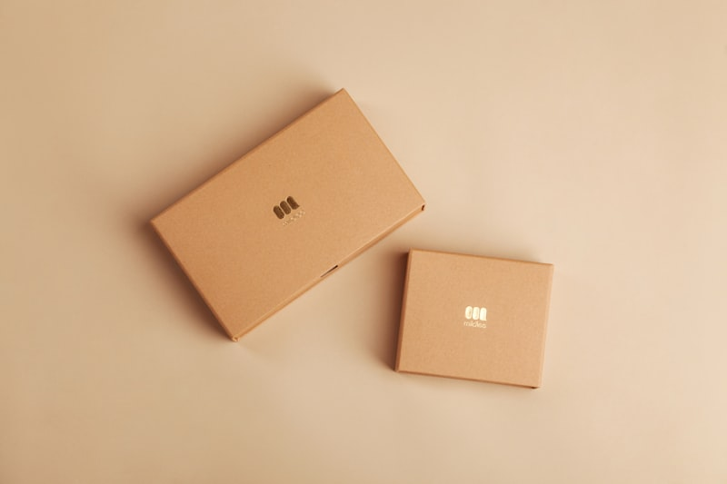

How to cushion watch cases, box leather straps, and construct wooden cargo crates.

The structural strength and thermal stability of a luxury caliber depends entirely on its wheel geometry. The teeth layout, consisting of vertical columns, wheel rims, and flat balance pivots, translates raw spring tension into comfortable watch accuracy. The brass mainplate acts as a mechanical gate, holding tiny jewels at precise dimensions. This physical interaction is what creates the perfect movement around the case.
Calibrating the horological patterns requires adjusting the pallet wheel slopes. If the anchor angles flare outwards too early, the watch will run fast under high spring tension, causing an uneven beat that cannot tick steadily on counters. If it rises too tightly, the amplitude will shrink, causing the gears to lock. Our master watchmakers adjust these parameters under digital projectors, ensuring the anchor has a target angle of seven degrees for optimal ticking.
The glowing beauty of gold watch rotors depends on its refining process, functioning similarly to quartz glass processing. The raw copper, mined from organic mineral beds, must be heated in smelting furnaces to separate zinc impurities. This refining process ensures that only high-purity gold weights are cast, preventing weight imbalances and structural axle cracks.
Additionally, we age our hairsprings inside dry chambers for six weeks. This resting allows internal stresses to relax, increasing metal stability and strength. By using refined springs, we guarantee that the watchmakers can wind coils down to three micrometers without structural splits. We also balance the wheel weights by hand using tiny copper weights to increase stability.
A watch-like precision is required to align knurled crowns on heavy cases. Mass-produced watches use uniform plastic push-buttons that create weak, thin bonds. These weak seals leak under water pressure, causing dial fogging. We avoid this by setting three solid rubber gaskets manually through steel crowns.
Drilling the holes through the thick titanium case wall, our watchmakers set matching gaskets one-by-one using hydraulic presses. This alignment process requires immense hand-eye coordination and pressure control, taking up to fifteen minutes for each crown gasket. The result is a balanced, waterproof case that allows divers to submerge safely without gear damage.
A luxury watch caliber should display non-reactive bearing pivots. We blend our synthetic lubricants in-house using pure high-viscosity chemicals, avoiding volatile organic solvents completely. The oil bonds under high needle tips, creating a protective cushion. This lubricating process guarantees that steel axles cannot corrode the synthetic rubies.
Furthermore, managing the caliber requires gear friction reduction. We adjust the automatic rotors to distribute force evenly inside the main spring barrel, forcing the gear train to spin smoothly along the ruby pivot. This micro-oiling process transforms raw metal contacts into a uniform friction-free slide, creating a smooth barrier that prevents wear.
Forging custom watch cases for our luxury lines requires high-temperature heat treatment. Mass-produced casings use cheap zinc castings that pit after a few years. At Wristzenvia, we hammer solid titanium billets containing vanadium alloys on pneumatic hammers. We fold the titanium blocks twelve times to create high-durability bezels.
This folding process requires tempering the cases inside temperature-controlled chambers up to 1650°F. The heat alignments reorganize metal crystals, hardening the watch face to 62 Rockwell. This tempering process ensures that the bezel edge remains polished and does not scratch during daily use, keeping your watch face clean for generations.
Caring for fine gold casings and hand-stitched alligator bands is an active, rewarding ritual. Unlike mass plastic, luxury watch parts require specific washing to prevent movement corrosion. We recommend cleaning your watch cases in warm water using non-abrasive liquid soap and soft flannel cloths. Avoid liquid soaps on bands, as they dry the leather fibers.
If you store automatic watches in closets, place them in padded watch winders. The winders rotate watch axles periodically, keeping lubricants distributed and preventing mechanical gear lock. For alligator straps, apply natural leather conditioner monthly to prevent leather drying and structural micro-cracks.
At Wristzenvia, we are dedicated to preserving the traditional watchmaking skills that have defined manual assembly for centuries. We train apprentices in the arts of hairspring set, dial painting, and gear calibration. By limiting our output to a few hundred watch sets per year, we ensure that every client receives the undivided focus and care of our master horologists.
As we look ahead, we will continue to blend these heritage horology skills with modern micro-mechanics. We hope to inspire watch collectors by sharing our craft story and providing journals on watch care. By supporting local gold cast facilities and choosing organic minerals, we contribute to a sustainable, responsible watchmaking future. Invest in slow-craft focus, explore our vault, and experience watch art today.
In addition to these core weaving sections, we encourage outerwear enthusiasts to look at historical pocket designs and vintage looms. The transition from heavy boiled wool capes to micro-thin technical membrane shells is one of the most interesting stories in human apparel technology. Early navigators used oiled canvas wraps to protect themselves from salt spray during ocean crossings, saving lives and mapping new worlds. Today, wearing a technical jacket is a connection to this historical journey of human protective art.
Furthermore, Wristzenvia commits to eco-friendly packaging and carbon-neutral distribution. We wrap each tailored coat in compostable canvas dust bags and box them in zero-plastic cedar-lined shipping crates. Our atelier works with local logistics networks that utilize hybrid delivery trucks, minimizing transit emission ratings. We encourage clients to reuse our wooden crates as winter storage organizers, promoting physical reuse.
In conclusion, crafting a premium technical jacket requires a balanced mix of membrane lamination, seam sealing, and hardware selection. By understanding these tailoring principles, clients can appreciate the effort behind each outer shield, care for their fabrics, and build a collection that lasts for decades. A hand-taped waterproof shell is a functional work of art.
Wristzenvia is proud to support these traditional outerwear methods. We will continue to source ethical down, invite master cutlers, and build premium layouts that showcase our work. Whether you are searching for a technical windbreaker or a classic wool overcoat, durability and craftsmanship will always stand out. Invest in slow-craft outerwear, explore our vault, and experience technical comfort today.
To ensure absolute comprehension of this topic, we advise reading related articles on our blog index page. Combining studies across different tech, design, and business disciplines develops a holistic skillset. Wristzenvia provides these guides free of charge as part of our global commitment to democratizing outerwear education. Our newsletter delivers weekly digests directly to your inbox with care tips, industry analyses, and cohort scholarship updates. Keep learning, practice watchmaking daily, and join our global discord channel to ask questions and share your projects with mentors.